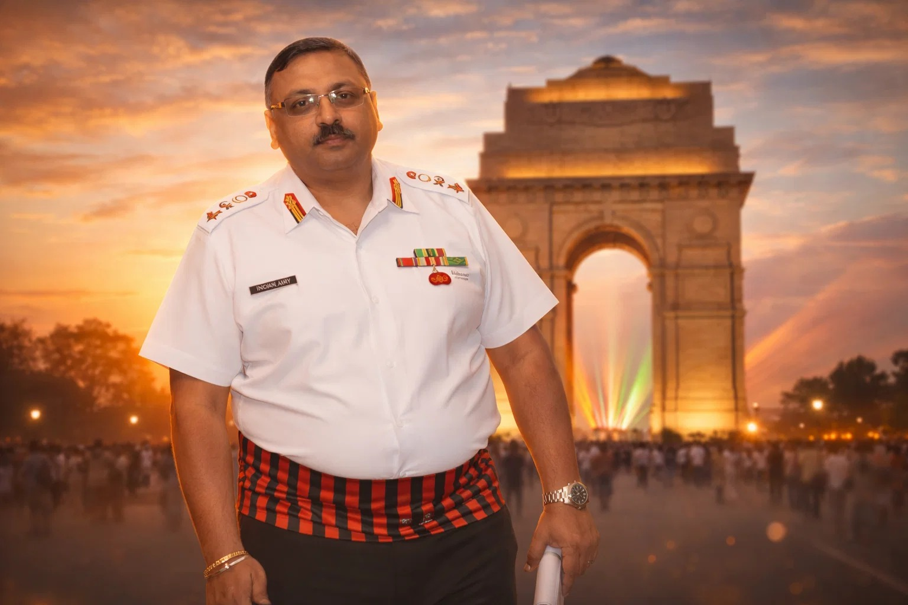

Military Quotes and Humour in Uniform
2010
Director Profile
Outgoing and extrovert leader with over 30 years of distinguished military experience, author of multiple defence books, senior fellow at USI and CLAWS, and mentor to defence aspirants. Focused on strategic studies, leadership, mentorship and national security.

Outgoing and extrovert leader with over 30 years of distinguished military experience, author of multiple defence books, senior fellow at USI and CLAWS, and mentor to defence aspirants. Focused on strategic studies, leadership, mentorship and national security.
Leader by choice, committed to responsibility and excellence. Experienced in infrastructure, administration, intelligence projects, resource management and military leadership with a passion for writing, travel and adventure sports.
Profile in Detail
Academic Qualifications
Delhi Public School, RK Puram, 1984 (CBSE, Board Topper)
DPS RK Puram, 1986 (Science Stream, 1st Division)
Sri Venkateshwara College, Delhi University, 1990 (BA English)
Professional Qualifications
Army Courses
Qualified in all compulsory army courses, from Young Officer's Course at School of Artillery to Commando Course at JLA Belgaum, TOs Course for Psychologists, and Defence Services Staff Course at Wellington, Tamil Nadu. Topped Joint Services Disaster Management in a tri-service environment.
Honours & Awards
Civil Experience
Journalism & Public Relations
Served at HQ Northern Command (2015-2017) as GSO-1 (Information Warfare), leading Social Media, Public Relations and Information Warfare campaigns across print, digital, social and electronic media. Also served at Strategic Communications Directorate, Army HQs (2009-12), coordinating media and publication efforts including editing the monthly magazine "BAATCHEET" (circulation 2800 establishments), formulating psychology themes for outsourced magazines, and contributing articles to national and defence publications.
Training & Instruction
Research & Books
2010
2011
2018
2020
2021
Guidance title
2024
2025
Family
Service and business family from Delhi. Married to a Senior PGT English Teacher and has one son who is an Orthodontist Consultant with Clove Dental.